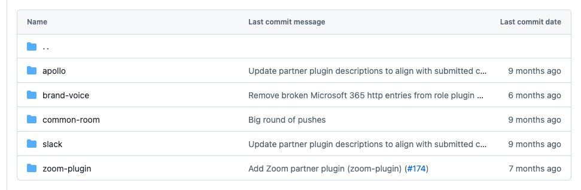

Ngoài 17 nhóm theo nghề, kho Knowledge Work Plugins của Anthropic còn một thư mục partner-built gồm 5 plugin do chính các đối tác làm: Apollo, Brand Voice, Common Room, Slack và Zoom. Tổng cộng 71 kỹ năng (Apollo 3, Brand Voice 3, Common Room 6, Slack 2, Zoom 57).
Mỗi đối tác tự viết README và tự quy định cách cài, nên bài này không dùng một công thức chung. Chúng mình tách thành năm phần, mỗi phần có cách cài chép từ README của đối tác đó, cách gọi và danh sách đủ kỹ năng. Bước nào phải do người làm được ghi NGƯỜI, bước máy tự làm ghi TỰ ĐỘNG.
Về cách gọi: nói việc bằng lời thường thì kỹ năng tự chạy khi đúng việc, hoặc gõ thẳng lệnh tắt dạng /<plugin>:<tên-kỹ-năng> (theo README gốc của kho và Docs của Claude Code).

Apollo (apollo)
Apollo.io là công cụ tìm khách tiềm năng và làm giàu thông tin liên hệ cho người bán hàng. Plugin này có 3 kỹ năng, mỗi kỹ năng nối nhiều bước của Apollo thành một việc trọn vẹn. Plugin tự cấu hình máy chủ MCP của Apollo khi cài, các bạn không phải sửa file cấu hình.
Cài đặt Apollo
Các bước dưới chép theo README riêng của plugin Apollo.
Cách 1, Claude Cowork:
- NGƯỜI: bấm liên kết Install in Cowork mà README đưa ra và xác nhận cài.
- NGƯỜI: khởi động lại Cowork để máy chủ MCP chạy đúng.
- NGƯỜI: gõ
/mcp, chọn máy chủ Apollo, bấm Authenticate và đăng nhập tài khoản Apollo.io trên trình duyệt.
Cách 2, Claude Code:
- NGƯỜI: trong Claude Code, thêm kho của Apollo:
/plugin marketplace add apolloio/apollo-mcp-plugin
- NGƯỜI: cài plugin:
/plugin install apollo@apollo-plugin-marketplace
- NGƯỜI: khởi động lại Claude Code, rồi làm bước đăng nhập
/mcpnhư ở Cách 1. - TỰ ĐỘNG: máy chủ MCP của Apollo được cấu hình cùng lúc cài plugin (theo README).
Kiểm đã cài: gõ /plugin và xem thẻ Installed, hoặc gõ / và tìm /apollo: (theo Docs của Claude Code). README của Apollo không ghi lệnh tắt hay gỡ; lệnh gỡ chung của Claude Code là claude plugin uninstall apollo@apollo-plugin-marketplace (suy từ tên kho trong README, chúng mình chưa chạy).
Về điểm cần lưu tâm: một số thao tác tiêu hao credit của Apollo. README ghi làm giàu thông tin mỗi người tốn 1 credit, làm giàu hàng loạt cũng tính 1 credit mỗi người trong lô, và plugin luôn cảnh báo trước khi dùng credit.
Cách gọi kỹ năng Apollo
Hai cách: nói việc bằng lời thường để kỹ năng tự chạy, hoặc gõ thẳng lệnh tắt kèm nội dung theo sau (ba kỹ năng đều nhận nội dung sau lệnh, theo README và khai báo của kỹ năng).
/apollo:enrich-lead tên người, công ty, link LinkedIn hoặc email /apollo:prospect mô tả khách hàng lý tưởng bằng tiếng thường /apollo:sequence-load tiêu chí tìm khách + tên chuỗi gửi thư
Các kỹ năng của Apollo
/apollo:enrich-lead: nhập tên, công ty, link LinkedIn hoặc email, nhận thẻ liên hệ đầy đủ gồm email, số điện thoại, chức danh, thông tin công ty và việc nên làm tiếp; tra mờ được và tự chuyển sang tìm kiếm khi không khớp chính xác. Câu gọi mẫu: "Tìm thông tin liên hệ của giám đốc kinh doanh công ty ABC."/apollo:prospect: mô tả khách hàng lý tưởng bằng lời thường, nhận bảng khách xếp hạng kèm điểm phù hợp, đã làm giàu thông tin người ra quyết định. Câu gọi mẫu: "Tìm giúp mình 20 trưởng phòng mua hàng của các nhà máy nhựa quy mô vừa."/apollo:sequence-load: tìm khách theo tiêu chí, làm giàu, tạo liên hệ có loại trùng rồi thêm hàng loạt vào một chuỗi gửi thư có sẵn; xem trước danh sách trước khi ghi danh và có tổng kết sau cùng. Câu gọi mẫu: "Tìm 30 chủ shop thời trang ở TP.HCM và thêm vào chuỗi Chào hàng tháng 11."
Brand Voice (brand-voice)
Brand Voice của Tribe AI gom tài liệu thương hiệu rải rác thành bộ quy tắc giọng văn cho AI, rồi kiểm nội dung AI viết có đúng quy tắc không. Plugin có 3 kỹ năng, đi theo thứ tự: tìm tài liệu, tạo hướng dẫn giọng văn, áp dụng khi viết.
Cài đặt Brand Voice
README riêng của Brand Voice chỉ ghi "cài plugin rồi mở Claude Cowork", không có dòng lệnh cài. Vì vậy phần lệnh ở Cách 2 lấy từ README gốc của kho Anthropic, nơi brand-voice có trong danh sách marketplace.
Cách 1, Claude Cowork:
- NGƯỜI: cài plugin Brand Voice từ claude.com/plugins rồi mở Claude Cowork.
- NGƯỜI: nối ít nhất một nền tảng chứa tài liệu thương hiệu. README khuyên chọn Notion vì Notion tìm xuyên được Google Drive, SharePoint, Slack và Jira.
- TỰ ĐỘNG: gõ
/brand-voice:discover-brand, Claude tự tìm tài liệu thương hiệu trong các nền tảng đã nối.
Cách 2, Claude Code:
- NGƯỜI: thêm kho và cài (lệnh ngoài terminal, theo README gốc của kho Anthropic):
claude plugin marketplace add anthropics/knowledge-work-plugins claude plugin install brand-voice@knowledge-work-plugins
- NGƯỜI (không bắt buộc): chép file
settings/brand-voice.local.md.examplecủa plugin thành.claude/brand-voice.local.mdtrong dự án và điền tên công ty, nền tảng đang bật, nơi để tài liệu thương hiệu (theo README mục Per-Project Settings).
Các nền tảng README liệt kê gồm Notion, Atlassian (Confluence, Jira), Box, Microsoft 365, Figma, Gong, Granola; Google Drive và Slack là tích hợp sẵn của Claude nên không cần cài kết nối MCP. Kiểm đã cài bằng /plugin, thẻ Installed. Tắt hoặc gỡ: claude plugin disable brand-voice@knowledge-work-plugins, claude plugin uninstall brand-voice@knowledge-work-plugins. README ghi hiện chỉ dùng ở mức cá nhân, chế độ cho cả nhóm "sắp có".
Cách gọi kỹ năng Brand Voice
Nói việc bằng lời thường (ví dụ "viết giúp mình email theo giọng của công ty") thì kỹ năng tự chạy. Hoặc gõ lệnh tắt, README cho phép viết thêm nội dung sau lệnh:
/brand-voice:discover-brand /brand-voice:discover-brand Acme Corp /brand-voice:generate-guidelines from the discovery report and these 3 PDFs /brand-voice:enforce-voice Write a LinkedIn post announcing our new feature
Tên lệnh và tên thư mục kỹ năng không trùng hoàn toàn, nên mỗi mục dưới đây ghi cả hai.
Các kỹ năng của Brand Voice
/brand-voice:discover-brand(thư mụcdiscover-brand): tự tìm tài liệu thương hiệu (cẩm nang phong cách, bản thuyết trình, mẫu email, bản ghi cuộc gọi) trên các nền tảng đã nối và xếp hạng nguồn. Câu gọi mẫu: "Công ty mình có cẩm nang thương hiệu nào không? Tìm giúp mình trong Notion và Google Drive."/brand-voice:generate-guidelines(thư mụcguideline-generation): biến tài liệu và bản ghi cuộc gọi thành hướng dẫn giọng văn cho AI: trụ cột giọng, thông số sắc thái, khung "chúng tôi là / không phải", thuật ngữ chuẩn. Câu gọi mẫu: "Từ báo cáo vừa tìm được, tạo giúp mình bộ hướng dẫn giọng văn."/brand-voice:enforce-voice(thư mụcbrand-voice-enforcement): áp hướng dẫn giọng văn khi viết email, đề xuất, bài đăng; giọng giữ nguyên còn sắc thái đổi theo từng loại nội dung, và báo chỗ lệch giọng. Câu gọi mẫu: "Viết một email chào hàng ngắn gửi giám đốc mua hàng, đúng giọng thương hiệu của mình."
Common Room (common-room)
Common Room là nền tảng gom tín hiệu khách hàng từ sản phẩm, cộng đồng và nguồn bên ngoài. Plugin biến nó thành trợ lý cho người bán hàng: tìm hiểu công ty và người liên hệ, chuẩn bị cuộc gọi, soạn thư chào hàng, lập danh sách khách, lập bản tin tuần. Plugin có 6 kỹ năng và 2 lệnh gõ tắt.
Cài đặt Common Room
README riêng của Common Room ghi mục Setup gồm ba bước và không có dòng lệnh cài. Phần lệnh ở Cách 2 lấy từ README gốc của kho Anthropic, nơi common-room có trong danh sách marketplace.
Cách 1, Claude Cowork:
- NGƯỜI: nối và xác thực máy chủ Common Room MCP (
mcp.commonroom.io/mcp) trong phần cài đặt của Cowork. Đây là nguồn dữ liệu chính, bắt buộc có. Các bạn cần tài khoản Common Room. - NGƯỜI (không bắt buộc): nối thêm một kết nối lịch để chuẩn bị cuộc gọi tự lấy cuộc họp. Không nối thì hai kỹ năng này hỏi các bạn thông tin cuộc họp.
- NGƯỜI: cài plugin từ claude.com/plugins. Theo README, cài xong là dùng được ngay.
Cách 2, Claude Code:
- NGƯỜI: thêm kho và cài (theo README gốc của kho Anthropic):
claude plugin marketplace add anthropics/knowledge-work-plugins claude plugin install common-room@knowledge-work-plugins
- NGƯỜI: xác thực Common Room MCP như ở Cách 1.
Kết nối lịch, theo CONNECTORS.md của plugin: Google Calendar đi kèm, tùy chọn khác là Outlook hoặc Microsoft 365 Calendar. Kiểm đã cài bằng /plugin, thẻ Installed. Tắt hoặc gỡ: claude plugin disable common-room@knowledge-work-plugins, claude plugin uninstall common-room@knowledge-work-plugins.
Cách gọi kỹ năng Common Room
README ghi rõ sáu kỹ năng kích hoạt bằng lời thường: các bạn mô tả việc, Claude tự nạp kỹ năng đúng. Hai lệnh gõ tắt dành cho việc phức tạp, README viết dạng /generate-account-plan và /weekly-brief; theo Docs của Claude Code, tên đầy đủ có tiền tố plugin, tức /common-room:generate-account-plan (chúng mình chưa kiểm).
/generate-account-plan <công ty hoặc tên miền> /weekly-brief [khoảng ngày, mặc định 7 ngày tới]
Lệnh /generate-account-plan lập kế hoạch tài khoản đầy đủ: sơ đồ người ra quyết định, mức tương tác, cơ hội, rủi ro, việc cần làm. Lệnh /weekly-brief chạy kỹ năng weekly-prep-brief.
Các kỹ năng của Common Room
account-research: tìm hiểu một công ty bằng dữ liệu Common Room: tổng quan, hỏi đúng một trường, trả lời trung thực khi dữ liệu thưa; có tra tin mới trên web và tự giới hạn theo phân khúc của người dùng. Câu gọi mẫu: "Tìm hiểu giúp mình công ty abc.com, họ có tín hiệu mua hàng không?"contact-research: tra một người theo email, tên kèm công ty hoặc tài khoản mạng xã hội: thông tin đã làm giàu, điểm số, lượt vào website, lịch sử hoạt động, gợi ý mở chuyện. Câu gọi mẫu: "Chị Lan, email lan@abc.com là ai, có phải khách nóng không?"call-prep: bản chuẩn bị trước cuộc gọi: tóm tắt công ty, hồ sơ từng người dự, tín hiệu nổi bật, ý chính nên nói, phản đối có thể gặp, kết quả nên hướng tới. Câu gọi mẫu: "Chuẩn bị giúp mình cuộc gọi chiều nay với công ty abc.com."compose-outreach: soạn ba dạng tin chào hàng cá nhân hóa gồm email, kịch bản gọi, tin LinkedIn, dựa trên tín hiệu Common Room. Câu gọi mẫu: "Soạn thư chào hàng cho anh Minh, giám đốc vận hành công ty abc.com."prospect: lập danh sách công ty hoặc người liên hệ bằng Prospector của Common Room; phân biệt công ty hoàn toàn mới và tài khoản đã có, tìm công ty tương tự, chỉnh dần qua hội thoại. Câu gọi mẫu: "Lập danh sách công ty logistics đang tuyển nhân viên bán hàng."weekly-prep-brief: bản tin tuần cho mọi cuộc gọi với bên ngoài trong 7 ngày tới, mỗi cuộc có tóm tắt công ty, hồ sơ người dự, tín hiệu và mục tiêu đề xuất. Câu gọi mẫu: "Chuẩn bị tuần mới giúp mình, tuần này có những cuộc gọi nào?"
Slack (slack)
Plugin Slack do Salesforce làm, nối Claude với máy chủ MCP chính thức của Slack để tìm tin nhắn, đọc kênh, gửi tin, tạo canvas. Plugin có 2 kỹ năng hướng dẫn cách viết tin và cách tìm, cộng 5 lệnh gõ tắt.
Cài đặt Slack
README riêng của plugin Slack nói về Claude Code và Cursor; chúng mình chỉ chép phần Claude Code.
- NGƯỜI: nhờ quản trị viên Slack của các bạn duyệt cho phép dùng tích hợp MCP. README ghi rõ chưa được duyệt thì chưa dùng được.
- NGƯỜI: tải plugin về máy rồi mở Claude Code kèm thư mục đó:
git clone https://github.com/slackapi/slack-mcp-plugin.git cd slack-mcp-plugin claude --plugin-dir ./
- TỰ ĐỘNG: máy chủ Slack MCP được cấu hình khi plugin nạp (theo README).
- NGƯỜI: đăng nhập vào workspace Slack qua OAuth khi Claude Code hỏi.
Cờ --plugin-dir nạp plugin cho một phiên làm việc; Docs của Claude Code dùng cờ này để thử plugin chép trên đĩa. Plugin này cũng nằm trong marketplace của kho Anthropic với tên slack-by-salesforce, nhưng README Slack không nhắc cách đó. Kiểm đã nạp: gõ / và tìm /slack:. README chỉ có máy chủ từ xa, không cài máy chủ cục bộ.
Cách gọi kỹ năng Slack
Hai cách: nói việc bằng lời thường (README ví dụ: "Search for messages about the product launch in the last week"), hoặc gõ lệnh tắt kèm tên kênh hoặc chủ đề. Năm lệnh theo file CLAUDE.md của plugin:
/slack:summarize-channel <tên-kênh> /slack:find-discussions <chủ đề> /slack:draft-announcement <chủ đề> /slack:standup /slack:channel-digest <kênh1, kênh2, ...>
Tóm tắt năm lệnh: tóm tắt hoạt động gần đây của một kênh; tìm các cuộc thảo luận về một chủ đề; soạn thông báo đúng định dạng và lưu làm bản nháp; viết bản cập nhật standup từ hoạt động Slack của chính các bạn; gom hoạt động của nhiều kênh thành một bản tổng hợp.
Các kỹ năng của Slack
slack-messaging: hướng dẫn soạn tin Slack đúng định dạng mrkdwn; áp dụng mỗi khi soạn, nháp tin hoặc tạo canvas. Câu gọi mẫu: "Soạn giúp mình tin báo triển khai xong gửi kênh #general, định dạng cho gọn."slack-search: hướng dẫn tìm kiếm trong Slack để ra tin nhắn, tệp, kênh, người; áp dụng khi cần gom ngữ cảnh về chuyện đang diễn ra trên Slack. Câu gọi mẫu: "Tìm trong Slack các tin nói về buổi ra mắt sản phẩm tuần trước."
Zoom (zoom-plugin)
Plugin Zoom do Zoom làm, dành cho người lập kế hoạch, xây và sửa lỗi các tích hợp Zoom: chọn đúng bề mặt Zoom, định hình cách làm, tìm tầng bị hỏng. Plugin có 57 kỹ năng, nhiều nhất trong nhóm đối tác, và chủ yếu hướng tới lập trình viên chứ không phải người chỉ muốn họp Zoom.
Cài đặt Zoom
Zoom cài khác bốn plugin trên. README ghi: cài thư mục plugin như một plugin Claude cục bộ, rồi đặt sẵn mã truy cập (bearer token) cho từng máy chủ MCP của Zoom mà các bạn muốn dùng. Theo CONNECTORS.md, chưa có mã thì plugin vẫn chạy ở chế độ riêng lẻ với các kỹ năng và tài liệu tham khảo đi kèm; có mã thì thêm được thao tác sống trên cuộc họp, bản ghi và tài liệu.
- NGƯỜI: tải kho về máy (thư mục plugin nằm ở
partner-built/zoom-plugin):git clone https://github.com/anthropics/knowledge-work-plugins.git
- NGƯỜI (chỉ khi cần thao tác sống qua Zoom MCP): tự lấy mã truy cập OAuth từ tài khoản Zoom của các bạn. README không hướng dẫn cách lấy mã. Mã là bí mật: không dán vào khung chat, không chép vào bài viết, không đưa vào kho git.
- NGƯỜI: đặt ba biến môi trường trong terminal trước khi mở Claude Code. Dòng dưới là mẫu từ README, các bạn thay phần trong ngoặc kép bằng mã của chính mình:
export ZOOM_MCP_ACCESS_TOKEN="your_zoom_user_oauth_access_token" export ZOOM_DOCS_MCP_ACCESS_TOKEN="your_zoom_docs_mcp_access_token" export ZOOM_WHITEBOARD_MCP_ACCESS_TOKEN="your_zoom_user_oauth_access_token"
- NGƯỜI: mở Claude Code kèm thư mục plugin (cờ
--plugin-dirtheo Docs của Claude Code, nạp plugin cho một phiên):claude --plugin-dir ./knowledge-work-plugins/partner-built/zoom-plugin
- TỰ ĐỘNG: ba máy chủ MCP (
zoom-mcp,zoom-docs-mcp,zoom-whiteboard-mcp) được khai báo sẵn trong.mcp.jsoncủa plugin và đọc ba biến trên.
README ghi một mã dùng chung cho nhiều biến được, nếu mã đó có đủ quyền cho cả Zoom MCP chính và Zoom Docs MCP. Đổi hoặc làm mới mã thì phải khởi động lại Claude Code hoặc bật lại plugin để máy chủ MCP đọc mã mới. Kiểm đã nạp: gõ / và tìm /zoom-plugin:. Kho Anthropic cũng liệt kê plugin này trong marketplace với tên zoom-plugin, nhưng README Zoom chỉ nêu cách cài cục bộ nên chúng mình theo cách đó.
Cách gọi kỹ năng Zoom
Hai cách: nói việc bằng lời thường, hoặc gõ lệnh tắt kèm mô tả việc (README có ví dụ truyền nội dung sau lệnh). README viết lệnh dạng ngắn như /start; theo Docs, tên đầy đủ có tiền tố plugin như bên dưới (chúng mình chưa kiểm cách nào chạy ở máy các bạn). Chỉ 15 kỹ năng ở nhóm đầu là lệnh gõ được; phần còn lại Claude tự nạp khi cần.
/zoom-plugin:start Build an internal meeting assistant that joins calls, extracts action items, and stores summaries /zoom-plugin:debug-zoom My Zoom webhook signature verification fails in production but not locally /zoom-plugin:setup-zoom-mcp I want Claude to search meetings, pull recording resources, and create follow-up docs
Ba ví dụ trên chép từ README, giữ tiếng Anh. Các bạn viết tiếng Việt cũng được, nhưng chúng mình chưa thử.
Các kỹ năng của Zoom: 15 lệnh gõ tắt
Nhóm "Slash Workflows" trong README. Gõ được bằng lệnh.
/zoom-plugin:start: điểm vào cho mọi ý tưởng ứng dụng Zoom: chọn đúng bề mặt Zoom, định hình kiến trúc và chỉ sang kỹ năng triển khai phù hợp. Câu gọi mẫu: "Mình muốn làm trợ lý họp tự vào cuộc gọi, rút việc cần làm và lưu bản tóm tắt. Bắt đầu từ đâu?"/zoom-plugin:setup-zoom-oauth: chọn mô hình xác thực, quyền (scope) và luồng chuyển hướng cho ứng dụng Zoom; xử lý làm mới mã và sửa lỗi xác thực. Câu gọi mẫu: "Ứng dụng của mình nên dùng loại OAuth nào và xin những quyền nào?"/zoom-plugin:build-zoom-meeting-app: dựng hoặc nhúng luồng họp Zoom: vào họp bằng Meeting SDK, nhúng web hoặc di động, vòng đời cuộc họp, và cân nhắc Meeting SDK với Video SDK. Câu gọi mẫu: "Nhúng cuộc họp Zoom vào trang web của mình cho khách đặt lịch và tham gia."/zoom-plugin:build-zoom-bot: dựng bot họp, bot ghi hình, bộ xử lý cuộc họp thời gian thực, kết hợp Meeting SDK, RTMS và dịch vụ phía máy chủ. Câu gọi mẫu: "Làm bot tự vào cuộc họp để ghi lại bản chép lời theo thời gian thực."/zoom-plugin:debug-zoom: khoanh vùng tầng hỏng của một tích hợp Zoom và đưa danh sách giả thuyết xếp hạng kèm bước kiểm. Câu gọi mẫu: "Webhook Zoom của mình lỗi xác thực chữ ký trên máy chủ thật nhưng chạy tốt ở máy mình."/zoom-plugin:setup-zoom-mcp: quyết định khi nào Zoom MCP phù hợp và lập kế hoạch thiết lập an toàn cho Claude, gồm cả mô hình lai MCP với REST. Câu gọi mẫu: "Mình muốn Claude tìm cuộc họp, lấy bản ghi và tạo tài liệu theo dõi. Thiết lập thế nào?"/zoom-plugin:build-zoom-rest-api-app: chọn endpoint REST, mẫu quản lý tài nguyên, yêu cầu OAuth, giới hạn tốc độ và gỡ lỗi API (thư mụcrest-api). Câu gọi mẫu: "Dùng REST API để liệt kê cuộc họp của cả công ty thì gọi endpoint nào?"/zoom-plugin:build-zoom-meeting-sdk-app: tham chiếu Meeting SDK: vào họp thật, hành vi theo từng nền tảng, xác thực, phòng chờ, mẫu bot họp (thư mụcmeeting-sdk). Câu gọi mẫu: "Vào họp bằng Meeting SDK mà bị kẹt ở phòng chờ, kiểm chỗ nào?"/zoom-plugin:build-zoom-video-sdk-app: tham chiếu Video SDK khi cần toàn quyền thiết kế trải nghiệm video, không phải cuộc họp Zoom thật (thư mụcvideo-sdk). Câu gọi mẫu: "Mình cần buổi tư vấn video một-kèm-một với giao diện riêng, nên dùng SDK nào?"/zoom-plugin:setup-zoom-webhooks: thiết lập đăng ký webhook, xác minh chữ ký, xử lý nhận tin, thử lại và chọn loại sự kiện (thư mụcwebhooks). Câu gọi mẫu: "Cài webhook báo cho hệ thống của mình mỗi khi cuộc họp kết thúc."/zoom-plugin:setup-zoom-websockets: thiết lập nhận sự kiện qua WebSocket khi cần kết nối bền, nhanh hơn webhook hoặc bị ràng buộc bảo mật (thư mụcwebsockets). Câu gọi mẫu: "Webhook chậm quá, chuyển sang WebSocket được không?"/zoom-plugin:build-zoom-team-chat-app: xây tích hợp Team Chat cho người dùng hoặc chatbot: thẻ giàu nội dung, nút bấm, lệnh gạch chéo, webhook chat (thư mụcteam-chat). Câu gọi mẫu: "Làm chatbot trong Zoom Team Chat để nhân viên hỏi quy định nội bộ."/zoom-plugin:build-zoom-phone-integration: xây tích hợp Zoom Phone: Smart Embed, API, sự kiện, tổng đài gắn CRM, tự động hóa xử lý cuộc gọi (thư mụcphone). Câu gọi mẫu: "Gắn Zoom Phone vào CRM để bấm số gọi ngay từ hồ sơ khách."/zoom-plugin:build-zoom-contact-center-app: xây tích hợp Contact Center cho ứng dụng, web hoặc ứng dụng gốc; xử lý ngữ cảnh cuộc trò chuyện, chiến dịch, gọi lại (thư mụccontact-center). Câu gọi mẫu: "Nhúng chat chăm sóc khách của Zoom Contact Center vào ứng dụng của mình."/zoom-plugin:build-zoom-virtual-agent: xây tích hợp Virtual Agent dạng nhúng web hoặc lớp bao cho di động, đồng bộ cơ sở kiến thức, xử lý vòng đời (thư mụcvirtual-agent). Câu gọi mẫu: "Nhúng trợ lý ảo của Zoom vào website bán hàng."
Các kỹ năng của Zoom: 5 kỹ năng định tuyến nội bộ
Nhóm "Internal Routing Skills" trong README (kỹ năng start cũng nằm ở nhóm này nhưng đã liệt kê ở trên). Không phải lệnh gõ tắt công khai; Claude tự dùng để dẫn đường.
plan-zoom-product(Claude tự nạp, không gõ lệnh): chọn bề mặt xây dựng Zoom hợp với một nhu cầu và giải thích đánh đổi giữa REST API, webhook, WebSocket, SDK, Phone, Contact Center, MCP. Câu gọi mẫu: "So sánh giúp mình các cách làm Zoom cho bài toán họp khách hàng."plan-zoom-integration(Claude tự nạp, không gõ lệnh): biến ý tưởng tích hợp Zoom thành kế hoạch triển khai gồm kiến trúc, xác thực, mốc giao việc, danh sách rủi ro, bước đi tiếp theo. Câu gọi mẫu: "Lập kế hoạch từng giai đoạn để làm tích hợp Zoom với hệ thống của mình."choose-zoom-approach(Claude tự nạp, không gõ lệnh): chọn kiến trúc Zoom hợp với một trường hợp dùng, kể cả phương án kết hợp nhiều cách. Câu gọi mẫu: "Mình nên dùng webhook hay WebSocket cho việc nhận sự kiện họp?"design-mcp-workflow(Claude tự nạp, không gõ lệnh): thiết kế quy trình Zoom MCP cho Claude: việc nào hợp với MCP, việc nào để REST API lo. Câu gọi mẫu: "Phần nào của quy trình này nên giao cho Zoom MCP, phần nào gọi REST?"debug-zoom-integration(Claude tự nạp, không gõ lệnh): tìm nhanh tầng hỏng của tích hợp Zoom (xác thực, webhook, vào họp bằng SDK, MCP, media thời gian thực) trước khi đề xuất cách sửa. Câu gọi mẫu: "Bot của mình vào họp được nhưng không nhận âm thanh, hỏng ở tầng nào?"
Các kỹ năng của Zoom: 3 tham chiếu sâu chung
Nhóm "Deep References" trong README, phần chưa liệt kê ở trên. Nhóm này là thư viện tham khảo; Claude nạp sau khi đã chọn được hướng đi.
zoom-general(Claude tự nạp, không gõ lệnh): tham chiếu chung nhiều sản phẩm Zoom: so sánh mô hình ứng dụng, xác thực, quyền, marketplace, chọn API hay MCP (thư mụcgeneral). Câu gọi mẫu: "Zoom Apps và Meeting SDK khác nhau chỗ nào?"zoom-oauth(Claude tự nạp, không gõ lệnh): tham chiếu xác thực Zoom: loại thông tin ứng dụng, kiểu cấp quyền, scope, làm mới mã, lỗi OAuth (thư mụcoauth). Câu gọi mẫu: "Báo lỗi redirect URI mismatch khi đăng nhập Zoom, sửa sao?"zoom-mcp(Claude tự nạp, không gõ lệnh): hướng dẫn cho các kết nối Zoom MCP đi kèm: bề mặt công cụ, xác thực, giới hạn khi truy cập cuộc họp, bản ghi, tài sản cuộc họp, bản chép lời (thư mụczoom-mcp). Câu gọi mẫu: "Zoom MCP lấy được bản chép lời cuộc họp ở bước nào?"
Các kỹ năng của Zoom: 34 tham chiếu theo sản phẩm và nền tảng
README chỉ gọi chung nhóm này là "existing Zoom reference skills", không chia nhỏ hơn, nên chúng mình giữ nguyên một nhóm. Danh sách theo thứ tự tên thư mục: Cobrowse, Contact Center, Meeting SDK theo nền tảng, Probe, Rivet, RTMS, Scribe, UI Toolkit, Video SDK theo nền tảng, Virtual Agent, Zoom Apps, Whiteboard MCP. Tên hiển thị là trường name trong từng kỹ năng, nên vài tên có dấu gạch chéo.
zoom-cobrowse-sdk(Claude tự nạp, không gõ lệnh): Cobrowse SDK: cùng duyệt web, công cụ chú thích, che dữ liệu riêng tư, hỗ trợ từ xa, chia sẻ phiên bằng mã PIN (thư mụccobrowse-sdk). Câu gọi mẫu: "Làm tính năng nhân viên hỗ trợ cùng xem màn hình trình duyệt của khách."contact-center/android(Claude tự nạp, không gõ lệnh): Contact Center SDK cho Android: chat, video, trợ lý ảo, gọi lại theo lịch, chế độ chiến dịch, vòng đời dịch vụ. Câu gọi mẫu: "Nhúng chat Contact Center vào ứng dụng Android."contact-center/ios(Claude tự nạp, không gõ lệnh): Contact Center SDK cho iOS: chat, video, trợ lý ảo, gọi lại theo lịch, nối vòng đời ứng dụng, vào lại phiên. Câu gọi mẫu: "Nhúng Contact Center vào ứng dụng iOS."contact-center/web(Claude tự nạp, không gõ lệnh): Contact Center SDK cho web: nhúng chat, video, chiến dịch, xử lý sự kiện, tích hợp ngữ cảnh ứng dụng, Smart Embed postMessage. Câu gọi mẫu: "Nhúng chat Contact Center vào website."zoom-meeting-sdk-android(Claude tự nạp, không gõ lệnh): Meeting SDK cho ứng dụng Android: giao diện mặc định hoặc tùy biến, xác thực PKCE và SDK, vào họp và bắt đầu họp. Câu gọi mẫu: "Nhúng cuộc họp Zoom vào ứng dụng Android của mình."zoom-meeting-sdk-electron(Claude tự nạp, không gõ lệnh): Meeting SDK cho ứng dụng máy tính Electron: gói Node, xác thực JWT, vào họp, bộ điều khiển cài đặt, dữ liệu thô. Câu gọi mẫu: "Nhúng Zoom vào ứng dụng Electron."zoom-meeting-sdk-ios(Claude tự nạp, không gõ lệnh): Meeting SDK cho ứng dụng iOS: giao diện mặc định hoặc tùy biến, PKCE và SDK, chủ phòng bắt đầu họp bằng ZAK, vòng đời di động. Câu gọi mẫu: "Nhúng cuộc họp Zoom vào ứng dụng iOS."meeting-sdk/linux(Claude tự nạp, không gõ lệnh): Meeting SDK cho Linux: bot họp C++ không giao diện, truy cập âm thanh và hình thô, chép lời, ghi hình, tích hợp AI. Câu gọi mẫu: "Làm bot họp chạy trên máy chủ Linux để chép lời tự động."zoom-meeting-sdk-macos(Claude tự nạp, không gõ lệnh): Meeting SDK cho ứng dụng macOS: giao diện mặc định hoặc tùy biến, PKCE và SDK, bộ điều khiển tính năng họp trên máy tính. Câu gọi mẫu: "Nhúng cuộc họp Zoom vào ứng dụng macOS."zoom-meeting-sdk-react-native(Claude tự nạp, không gõ lệnh): Meeting SDK cho React Native: nhúng họp trên iOS và Android, xác thực JWT, vào hoặc bắt đầu họp, xử lý cầu nối gốc. Câu gọi mẫu: "Nhúng họp Zoom vào ứng dụng React Native."zoom-meeting-sdk-unreal(Claude tự nạp, không gõ lệnh): Meeting SDK cho Unreal Engine: lớp bao C++ và Blueprint, đối chiếu lớp bao với SDK gốc. Câu gọi mẫu: "Nhúng họp Zoom vào dự án Unreal."zoom-meeting-sdk-web(Claude tự nạp, không gõ lệnh): Meeting SDK cho web, hai kiểu Client View và Component View; có cấu hình SharedArrayBuffer cho video HD, xem dạng lưới, nền ảo. Câu gọi mẫu: "Nhúng họp Zoom vào ứng dụng React của mình."zoom-meeting-sdk-web-client-view(Claude tự nạp, không gõ lệnh): Meeting SDK web kiểu Client View: toàn trang với giao diện Zoom quen thuộc, dùng đối tượngZoomMtg, hợp khi cần tích hợp nhanh, ít tùy biến. Câu gọi mẫu: "Tích hợp nhanh họp Zoom toàn trang vào web."zoom-meeting-sdk-web-component-view(Claude tự nạp, không gõ lệnh): Meeting SDK web kiểu Component View: thành phần nhúng được, API dạng Promise, hợp với React, Vue, Angular và bố cục riêng. Câu gọi mẫu: "Làm giao diện riêng quanh cuộc họp Zoom thật trong ứng dụng Vue."zoom-meeting-sdk-windows(Claude tự nạp, không gõ lệnh): Meeting SDK cho Windows: C++ gốc, kiến trúc giao diện tùy biến, dữ liệu âm thanh và hình thô, bot không giao diện, vòng lặp thông điệp Windows. Câu gọi mẫu: "Làm ứng dụng Windows nhúng họp Zoom."probe-sdk(Claude tự nạp, không gõ lệnh): Probe SDK: kiểm tra trình duyệt, quyền media, chẩn đoán âm thanh và video, độ sẵn sàng của mạng trước khi người dùng vào họp (thư mụcprobe-sdk). Câu gọi mẫu: "Kiểm tra máy và mạng của khách trước khi họ vào buổi họp."rivet-sdk(Claude tự nạp, không gõ lệnh): Rivet SDK: xử lý xác thực, bộ nhận webhook, lớp bao API, ghép nhiều mô-đun, mẫu nhận trên Lambda (thư mụcrivet-sdk). Câu gọi mẫu: "Dùng Rivet để dựng máy chủ nhận sự kiện Zoom."zoom-rtms(Claude tự nạp, không gõ lệnh): RTMS: xử lý âm thanh, video, chat, chép lời, chia sẻ màn hình và giọng nói tổng đài theo thời gian thực (thư mụcrtms). Câu gọi mẫu: "Lấy dòng âm thanh cuộc họp theo thời gian thực để phân tích."scribe(Claude tự nạp, không gõ lệnh): Scribe của Zoom AI Services: chép lời tệp media đã tải lên hoặc lưu sẵn, xác thực JWT, chế độ nhanh, tác vụ hàng loạt, thiết kế quy trình bản chép lời. Câu gọi mẫu: "Chép lời hàng loạt các file ghi âm cuộc họp đã lưu."ui-toolkit/web(Claude tự nạp, không gõ lệnh): UI Toolkit của Video SDK cho web: giao diện React dựng sẵn khi không muốn tự làm toàn bộ giao diện (thư mụcui-toolkit). Câu gọi mẫu: "Dùng giao diện React dựng sẵn cho phiên video của mình."zoom-video-sdk-android(Claude tự nạp, không gõ lệnh): Video SDK cho Android: trải nghiệm video tùy biến hoàn toàn, mã phiên, tùy chọn media thô, trạng thái người tham gia theo sự kiện. Câu gọi mẫu: "Làm phiên video riêng trên Android."zoom-video-sdk-flutter(Claude tự nạp, không gõ lệnh): Video SDK cho Flutter: ứng dụng video tùy biến, kiến trúc theo sự kiện, vòng đời phiên, nền tảng di động. Câu gọi mẫu: "Làm phiên video riêng bằng Flutter."zoom-video-sdk-ios(Claude tự nạp, không gõ lệnh): Video SDK cho iOS: phiên video tùy biến, xác thực phiên bằng mã, luồng media và người tham gia theo sự kiện. Câu gọi mẫu: "Làm phiên video riêng trên iOS."video-sdk/linux(Claude tự nạp, không gõ lệnh): Video SDK cho Linux: bot C++ không giao diện, thu và chèn âm thanh, hình thô, tích hợp Qt/GTK, hỗ trợ Docker. Câu gọi mẫu: "Làm bot video chạy trong Docker trên Linux."zoom-video-sdk-macos(Claude tự nạp, không gõ lệnh): Video SDK cho ứng dụng macOS: giao diện gốc tùy biến, vào phiên bằng mã, quy trình thiết bị và media trên máy tính. Câu gọi mẫu: "Làm phiên video riêng cho ứng dụng macOS."zoom-video-sdk-react-native(Claude tự nạp, không gõ lệnh): Video SDK cho React Native: phiên video di động tùy biến, trình nghe sự kiện, API dạng helper, luồng mã JWT phía máy chủ. Câu gọi mẫu: "Làm phiên video riêng bằng React Native."zoom-video-sdk-unity(Claude tự nạp, không gõ lệnh): Video SDK cho Unity: lớp bao, ánh xạ trạng thái cảnh và giao diện Unity sang sự kiện của Video SDK. Câu gọi mẫu: "Làm phiên video trong ứng dụng Unity."video-sdk/web(Claude tự nạp, không gõ lệnh): Video SDK cho web: JavaScript/TypeScript, phiên video trên trình duyệt, giao tiếp thời gian thực, chia sẻ màn hình, ghi hình, chép lời trực tiếp. Câu gọi mẫu: "Làm phòng tư vấn video ngay trong trình duyệt."video-sdk/windows(Claude tự nạp, không gõ lệnh): Video SDK cho Windows: C++, phiên video, thu âm thanh và hình thô, chia sẻ màn hình, ghi hình, giao tiếp thời gian thực. Câu gọi mẫu: "Làm phiên video riêng cho ứng dụng Windows."virtual-agent/android(Claude tự nạp, không gõ lệnh): Virtual Agent cho Android qua WebView: cầu nối Java/Kotlin, xử lý URL gốc, chuyển giao sang nhân viên, nhúng an toàn theo vòng đời. Câu gọi mẫu: "Nhúng trợ lý ảo vào ứng dụng Android."virtual-agent/ios(Claude tự nạp, không gõ lệnh): Virtual Agent cho iOS qua WKWebView: chèn script Swift/Objective-C, bộ xử lý thông điệp, chuyển giao sang nhân viên, chính sách điều hướng URL. Câu gọi mẫu: "Nhúng trợ lý ảo vào ứng dụng iOS."virtual-agent/web(Claude tự nạp, không gõ lệnh): Virtual Agent cho web: mở chat theo chiến dịch hoặc mã mục nhập, điều khiển theo sự kiện, cập nhật ngữ cảnh người dùng, triển khai tương thích CSP. Câu gọi mẫu: "Nhúng trợ lý ảo vào website."zoom-apps-sdk(Claude tự nạp, không gõ lệnh): Zoom Apps SDK: ứng dụng web chạy bên trong cuộc họp, hội thảo trực tuyến, ứng dụng chính hoặc Zoom Phone (thư mụczoom-apps-sdk). Câu gọi mẫu: "Làm ứng dụng chạy ngay bên trong cuộc họp Zoom."zoom-mcp/whiteboard(Claude tự nạp, không gõ lệnh): hướng dẫn cho kết nối Zoom Whiteboard MCP: xác thực, endpoint, ánh xạ mã định danh, công cụ như liệt kê và lấy bảng trắng. Câu gọi mẫu: "Liệt kê các bảng trắng Zoom của mình qua MCP."
Lưu ý khi dùng ở Việt Nam
Apollo: README không nói độ phủ dữ liệu theo quốc gia. Nhận xét của chúng mình, chưa kiểm: dữ liệu liên hệ có thể thưa hơn với doanh nghiệp nhỏ ở Việt Nam, nên các bạn thử với vài khách trước khi nạp cả danh sách vào chuỗi gửi thư, và tránh lãng phí credit.
Brand Voice và Common Room: cả hai viết quy trình và ví dụ bằng tiếng Anh. Nhận xét của chúng mình, chưa thử: tài liệu thương hiệu tiếng Việt cần kiểm kỹ kết quả tìm và giọng văn; nhiều đội ở Việt Nam dùng Zalo, Google Workspace hay công cụ bán hàng nội địa, những thứ không có trong danh sách kết nối của hai plugin này.
Slack: README yêu cầu quản trị viên workspace duyệt tích hợp MCP trước. Với công ty có quy định về dữ liệu, các bạn nên hỏi bộ phận phụ trách công nghệ hoặc pháp lý trước khi cho AI đọc tin nhắn nội bộ. Đây là lời khuyên của chúng mình, README không nói.
Zoom: plugin viết cho người xây ứng dụng. Nếu các bạn chỉ muốn tóm tắt cuộc họp của mình thì cần mã truy cập OAuth từ tài khoản Zoom và nên để người rành kỹ thuật hỗ trợ. Mã truy cập coi như mật khẩu, không để lộ.
Chúng mình chưa cài thử năm plugin đối tác này; lệnh và tên kỹ năng lấy từ kho gốc của Anthropic và README của từng đối tác.
Xem các nghề khác: Kỹ năng AI theo từng nghề.
Các bạn muốn có bộ kỹ năng riêng cho nghề của mình?
Follow chúng mình trên Threads và inbox, hoặc để lại số Zalo, chúng mình nhắn lại tư vấn.
Cập nhật 03/11/2026.